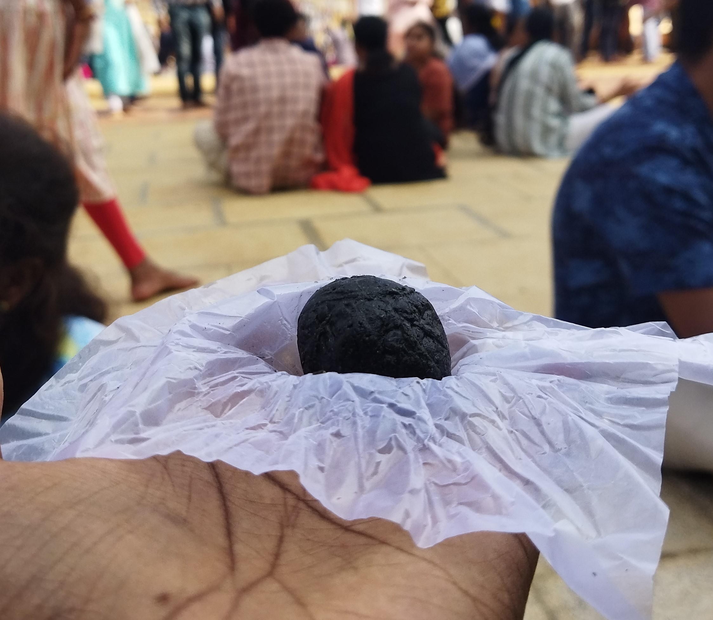
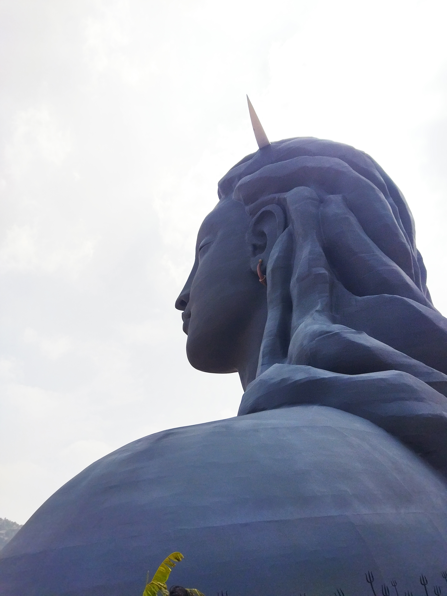
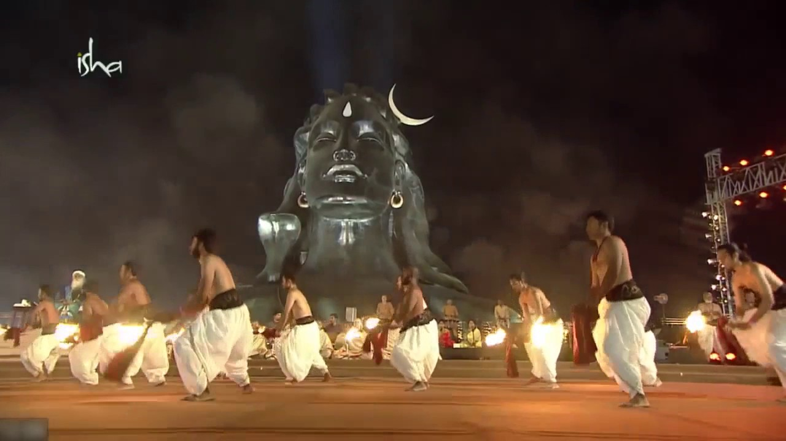

Adiyogi
ExploreExplore Adiyogi's timeless wisdom, your gateway to a balanced and enlightened life.
Join a journey of self-discovery, where ancient teachings meet modern well-being.
Explore
Spritual Heaven
Welcome to Isha Foundation in Chikkaballapur,
A vibrant center dedicated to holistic well-being and spiritual growth. Established by Sadhguru, a renowned mystic and visionary, Isha Foundation is a non-profit organization that offers transformative tools and teachings to empower individuals and communities.
Gallery
[click the image to get short description]

Naga
Naga, a revered deity at Isha Foundation, embodies health, prosperity, and mystical exploration. Devotees seek its protective and transformative blessings for a spiritually enriched life.

Prasadham
Isha Foundation's Prasadham in Chikkaballapur radiates positive energy, providing a delightful experience. Infused with black nuvvulu, it imparts a unique and flavorful dimension to the spiritual nourishment of the sacred offerings.

Enchanting Side View
Approaching the 118ft. Aadhiyogi statue sends chills, making you feel Shiva's closeness with a powerful and goosebump-worthy vibe.

Cultural Activites
Aadhiyogi hosts lively cultural events, elevating the atmosphere with effective songs, captivating dances, and spiritual sthorams, creating a joyous and vibrant gathering.

Majesty
Watching from afar, the magnetic pull of Shiva's presence inspires a journey towards the divine, casting a mesmerizing gaze upon the water and instilling powerful spiritual vibes.

Dhoop Arpane
Offering dhoop to the Naga, a serpent deity, is a traditional ritual for purification and well-being. It symbolizes gratitude and seeks blessings for health and prosperity, reflecting a harmonious blend of spirituality and cultural traditions.

Mala Arpane
Fresh flowers, exquisitely arranged as malas (garlands), are offered every day to the Naga. The offering can be made on special occasions, in memory of loved ones or simply as an expression of gratitude.

Yoga Sandhya
This powerful 30-minute program is an opportunity for you and your family to imbibe the grace of Adiyogi. It helps alleviate kula doshas (energetic impediments) and offers immense health and spiritual benefits.

Samarpane
An offering of a coconut and red earth along with other sacred items made to Yogeshwar Linga for the wellbeing of individuals or families. This offering can be made by two participants together.

Jala Offering
As a way to become receptive to the energies of Yogeshwar Linga, devotees can make an offering of water and neem leaves to the linga with their own hands.